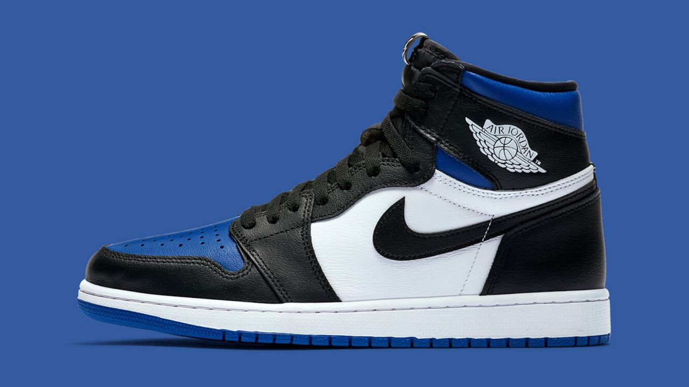

Special Eddition
The Air Jordan 1 Mid SE ‘Dark Chocolate’ features rustic earth tones on a classic silhouette modeled after the 1985 original. Soft black textile lines the interior of the upper, featuring a light brown nubuck base with a black leather Swoosh and suede overlays in chocolate brown. Reflective detailing lands on the heel and laces, good for enhanced visibility in low-light conditions. The mid-top rides on an Air-assisted rubber cupsole, highlighted by off-white sidewalls and a black rubber outsole.